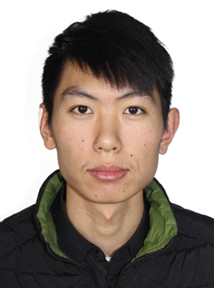

基本信息
姓名：卜凯凯
出生日期：1993-06-10
性别：男
电话：17346559443
邮箱：qq12352100@163.com
学历水平：本科
毕业学校：安徽工程大学
所学专业：计算机科学与技术
毕业年份：2016
求职意向：项目经理、系统运维

专业技能
1、熟练掌握 Java 面向对象编程，具备良好的编码习惯，熟悉常用设计模式并能结合实际场景应用；
2、熟悉 Spring Boot、Spring Cloud、MyBatis 等后端框架，了解 RuoYi、Yudao 等平台，具有微服务经验；
3、掌握 HTML、CSS、JavaScript、Vue 等前端技术，了解 Node.js 开发；
4、熟悉 MySQL、Oracle、PostgreSQL 及瀚高、达梦等国产数据库，主从配置与SQL性能优化及配置Redis；
5、熟练使用 Maven、Git、Docker 进行项目构建与部署，掌握 Kettle 数据集成工具；
6、掌握 Python 脚本开发，熟悉 Nginx 负载均衡配置、JVM 调优及容器化部署；
7、具备 Linux 系统操作及 Shell 脚本编写能力，系统监控与性能优化经验；
8、具备 IDC 机房基础运维经验，服务器上架、系统部署与虚拟化环境搭建；
9、熟悉政府信息化项目的实施、交付与验收全流程，具备良好的项目文档编制与合规管理能力。
2、熟悉 Spring Boot、Spring Cloud、MyBatis 等后端框架，了解 RuoYi、Yudao 等平台，具有微服务经验；
3、掌握 HTML、CSS、JavaScript、Vue 等前端技术，了解 Node.js 开发；
4、熟悉 MySQL、Oracle、PostgreSQL 及瀚高、达梦等国产数据库，主从配置与SQL性能优化及配置Redis；
5、熟练使用 Maven、Git、Docker 进行项目构建与部署，掌握 Kettle 数据集成工具；
6、掌握 Python 脚本开发，熟悉 Nginx 负载均衡配置、JVM 调优及容器化部署；
7、具备 Linux 系统操作及 Shell 脚本编写能力，系统监控与性能优化经验；
8、具备 IDC 机房基础运维经验，服务器上架、系统部署与虚拟化环境搭建；
9、熟悉政府信息化项目的实施、交付与验收全流程，具备良好的项目文档编制与合规管理能力。
工作经历
2016年01月 - 2017年03月
java研发-厦门保驾护航网络科技有限公司-电商行业
2017年03月 - 2019年04月
java研发-源讯中国（ATOS）-汽车行业
2019年06月 - 2025年5月
项目经理-万达信息股份有限公司-医疗行业
2025年10月 - 至今
现场交付-山东灵犀科技-政务行业
项目经验
滨州市社会稳定项目
工作内容：开展项目进度汇报，承担系统研发与代码调优，完成数据接入、清洗处理；
技术框架：Yudao、Dify、数据向量化、BPM 工作流引擎、Word 文档生成导出、Vue3 前端框架。
技术框架：Yudao、Dify、数据向量化、BPM 工作流引擎、Word 文档生成导出、Vue3 前端框架。
滨州市居民健康卡一卡通平台项目
该系统由滨州市卫生健康委员会主导，实现了全市医疗资源的整合，提供一卡通用服务，支持预约挂号、在线充值、报告查询等功能。系统的健康档案功能能够精准记录和反映患者的整个治疗过程。此外，系统还对医疗机构发放的实体卡及院内读卡设备进行统一管理和监管，确保医疗服务的安全性和便捷性。
主要职责包括：
1、部署安装系统：负责平台系统的部署和安装及升级工作，日常运维巡检，确保系统正常运行。
2、与医院、第三方公司进行接口对接：与医院和第三方公司沟通合作，进行系统接口的对接工作，确保各方系统间的数据传输畅通。
3、修改系统中存在的问题：及时发现系统存在的问题并进行修复和优化，确保系统的稳定性和高效性。
4、定期向领导汇报工作进展，编制详细的统计报表，并依据上级部门下发的指导文件，制定相应的建设与实施方案，及后期交付验收。
主要职责包括：
1、部署安装系统：负责平台系统的部署和安装及升级工作，日常运维巡检，确保系统正常运行。
2、与医院、第三方公司进行接口对接：与医院和第三方公司沟通合作，进行系统接口的对接工作，确保各方系统间的数据传输畅通。
3、修改系统中存在的问题：及时发现系统存在的问题并进行修复和优化，确保系统的稳定性和高效性。
4、定期向领导汇报工作进展，编制详细的统计报表，并依据上级部门下发的指导文件，制定相应的建设与实施方案，及后期交付验收。
Volkswagen MIT系统、PSI系统、SANBAO系统、Company-CAR系统、BentleyFinance系统
MIT系统：物流系统，德国与英国给中国发车，中国大众物流部员工通过MIT上报工信部到港车辆参数。
PSI系统：类似仓储系统，进口车到港之后通过PSI查询车辆参数并记录经销商对订购车辆付款情况。
SANBAO系统：售后服务系统，大众车辆到4s店维修记录汇总系统并根据维修记录对车辆做出预警。
Company CAR系统：大众内部员工借车系统记录。
BentleyFinance系统：宾利金融，宾利部门借贷款记录系统。
PSI系统：类似仓储系统，进口车到港之后通过PSI查询车辆参数并记录经销商对订购车辆付款情况。
SANBAO系统：售后服务系统，大众车辆到4s店维修记录汇总系统并根据维修记录对车辆做出预警。
Company CAR系统：大众内部员工借车系统记录。
BentleyFinance系统：宾利金融，宾利部门借贷款记录系统。
Volkswagen APON II系统
开发环境：Spring Hibernate Liferay
该系统是大众内部使用的一个OA系统，其中涉及将VGIC、VCIC、AUDI三家公司对车辆、耗材等许多工作流的审批流转， 领导小组共同开发，实现实际业务，实现公共Portlet，主题和HOOK的开发，对Liferay的源码以及Bug做过一些修改。
该系统是大众内部使用的一个OA系统，其中涉及将VGIC、VCIC、AUDI三家公司对车辆、耗材等许多工作流的审批流转， 领导小组共同开发，实现实际业务，实现公共Portlet，主题和HOOK的开发，对Liferay的源码以及Bug做过一些修改。
广西建档立卡信息管理系统
1、国家精准扶贫系统，对贫困户和贫困村进行信息录入统计。
2、主要涉及Oracle RAC、sql优化、单点登录、多数据源、报表导出。
3、涉及框架：spring、strust2、mybatis、velocity、easyui、poi、cas等。
4、负责模块：贫困户指标录入，帮扶责任人录入，帮扶对接。
2、主要涉及Oracle RAC、sql优化、单点登录、多数据源、报表导出。
3、涉及框架：spring、strust2、mybatis、velocity、easyui、poi、cas等。
4、负责模块：贫困户指标录入，帮扶责任人录入，帮扶对接。
拉萨市教育研究所学生成绩分析研判系统
1、拉萨市教育局收集研究学生成绩系统。对整个市的所有学校学生成绩录入分析。
2、主要涉及基本信息配置、数据批量导入、报表导出。
3、涉及框架：spring、strust2、mybatis、echarts、poi等。
4、负责模块：学生信息批量导入，规则验证。
2、主要涉及基本信息配置、数据批量导入、报表导出。
3、涉及框架：spring、strust2、mybatis、echarts、poi等。
4、负责模块：学生信息批量导入，规则验证。
湖北扶贫决策分析系统
1、基于湖北建档立卡信息管理系统，统计数据图表呈现。辅助扶贫办制定脱贫目标，脱贫验收。
2、主要涉及sql优化、单点登录、多数据源、报表导出、定时任务、redis缓存。
3、涉及框架：spring、strust2、mybatis、echarts、poi、redis等。
4、负责模块：贫困户与贫困村的各项指标统计。按行政区划呈现图形化数据。
2、主要涉及sql优化、单点登录、多数据源、报表导出、定时任务、redis缓存。
3、涉及框架：spring、strust2、mybatis、echarts、poi、redis等。
4、负责模块：贫困户与贫困村的各项指标统计。按行政区划呈现图形化数据。
保驾护航网上商城开发
1、公司整合保驾护航装修网附属产品。在原有电商平台二次开发。
2、主要涉及HTML静态化、图片服务器分离、负载均衡、Ecache缓存。
3、涉及框架：spring、springmvc、hibernate、nginx、shiro、freemarker、ehcache等。
4、负责模块：商品管理（发布，展示，评论，同类分析），商家后台权限抽取。
2、主要涉及HTML静态化、图片服务器分离、负载均衡、Ecache缓存。
3、涉及框架：spring、springmvc、hibernate、nginx、shiro、freemarker、ehcache等。
4、负责模块：商品管理（发布，展示，评论，同类分析），商家后台权限抽取。
保驾护航装修网改版
1、asp.net网站改版java框架，同时增加部分新功能。
2、主要职责涉及Seo优化，关键词优化，为搜索引擎收录网站结构优化。
3、后台新增使用echarts数据统计分析。
2、主要职责涉及Seo优化，关键词优化，为搜索引擎收录网站结构优化。
3、后台新增使用echarts数据统计分析。